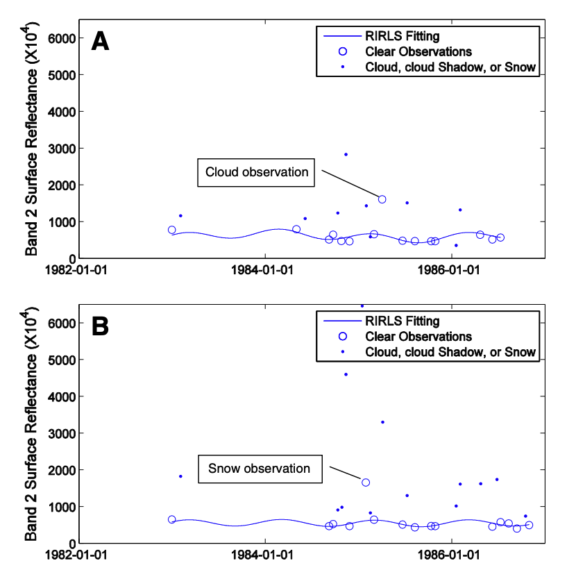
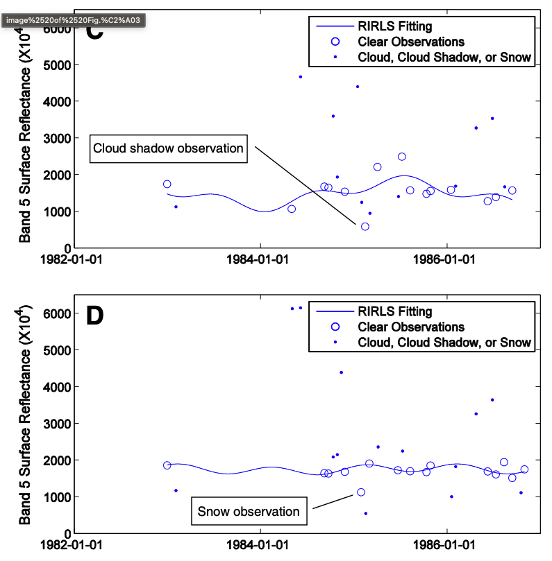
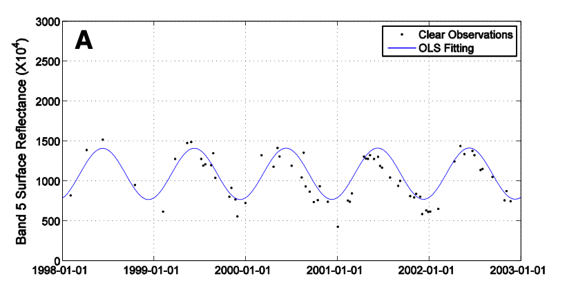
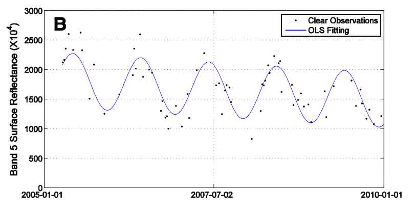
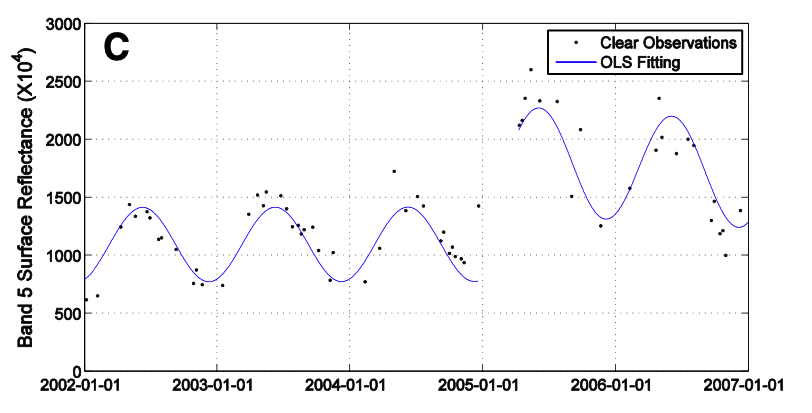
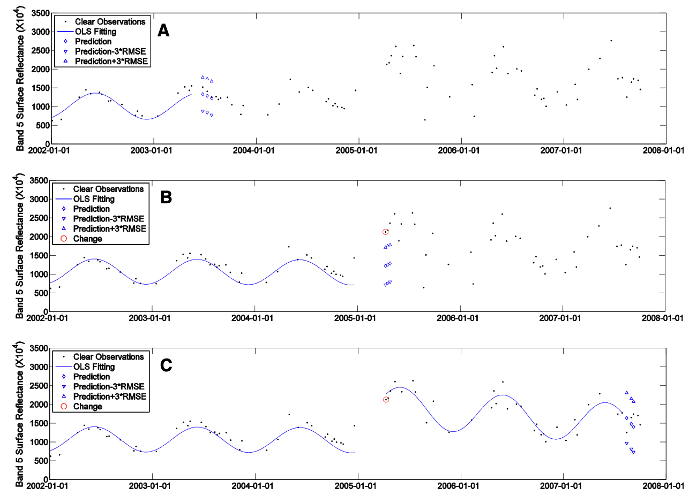
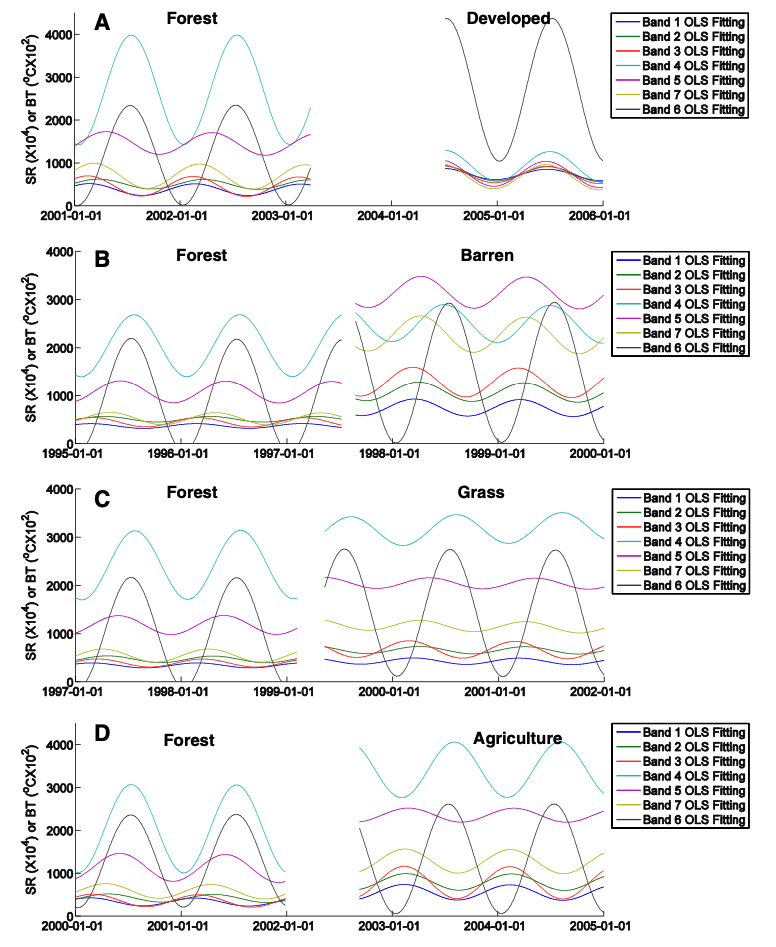

It’s an algorithm used in remote sensing area for land cover analysis. The original methods published form paper titled “Continuous change detection and classification of land cover using all available Landsat data”, published in 11 February 2014. Now it’s implementation are available on Google Earth Engine.
Abstract
- Detecting many kinds of Land Cover Change continuously as new images are collected, and providing land cover maps for any given time.
- Eliminating “noisy” observation by using masking algorithm. A two-step cloud, cloud shadow, and snow masking algorithm is used.
- Time series model. It has components of seasonality, trend, and break. Estimates surface reflectance and brightness temperature. The model is updated dynamically with newly acquired observations.
- CCDC algorithm use threshold derived from 7 Landsat bands due to differences in spectral response for various kinds of Land Cover Change.
- Land surface change is detected when the difference between observed and predicted images exceeds a threshold three consecutive times, than a pixel is identified as land surface change.
- Land cover classification is done after change detection. Coefficient from the time series model and the Root Mean Squared Error from model estimation are used as input to the Random Forest Classifier.
- The CCDC algorithm is applied to one Landsat scene in New England (WRS Path 12 and Row 31). All available (a total of 519) Landsat images acquired between 1982 and 2011 were used
- CCDC results were accurate for detecting land surface change, with producer’s accuracy of 98% and user’s accuracies of 86% in spatial domain and temporal accuracy of 80%. The land cover map with 16 categories had an overall accuracy of 90%.
Keywords: CCDC, Classification, Change detection, Time series, Land cover, Continuous, Landsat, Random Forest.
Introduction
Monitoring land cover change with remote sensing
Reading:
- Impact of Land Cover on Environmental Processes
- Natural and Anthropogenic Land Cover Change
- Challenges on land cover change detection
Land cover classification
Multitemporal images improve classification accuracy, especially for vegetation because of the unique phenological characteristics of different vegetation types. The problem is they need all dates of images to be free of clouds which often not possible.
We typically assume no land cover change in the time interval between the different images. This assumption is not always valid, especially when images from long time intervals are used.
Remote sensing community needs a classification algorithm that:
- Increases the time period over which land cover maps remain “current”.
- Works for areas where multiple kinds of land cover change is common.
- Makes land cover maps comparable between times for identification of change.
Data
Study area is located in coastal New England, United States. It includes a wide variety of environments and land covers including; extensive urbanization, abandonment of agricultural fields, and forest clearing. And it’s rare to find a cloud-free Landsat image in this area, making it an outstanding place to test the robustness of this new algorithm.
Methods
Image Preprocessing
Atmosphere Correction
Atmospheric correction is performed using the Landsat Ecosystem Disturbance Adaptive Processing System (LEDAPS) atmospheric correction tool.
Screening of cloud, cloud shadow, and snow
Initially masked using object-based algorithm called Fmask.
Second step cloud preprocessing
Further screening outliers missed by the Fmask algorithm based on multitemporal analysis. This approach first estimate the time series model on “clear” observations and then detect outliers by comparing model estimates and Landsat observations.
The Robust Iteratively Reweighted Least Squares method is used for estimating the time series model. This method reduces the influence of ephemeral changes, or pixel affected by clouds, shadows, or snow that were not identified by Fmask.
The time series model estimates for Band 2 and 5 because clouds and snow make Band 2 brighter, also cloud shadows and snow make Band 5 darker. By comparing actual Landsat observations and the corresponding model predictions, it is comparatively easy to identify any remaining clouds, cloud shadows, snow, and other ephemeral changes.
The observations that identified as an outlier is removed from further analysis.
The model estimation starts when there are a total of 15 “clear” (determined by Fmask) observations. The first 12 are compared between observed and model predicted values to decide whether there are outliers.
Examples
Snow and cloud make Band 2 more brighter (Figure A & B)

Cloud shadows and snow make Band 5 darker (Figure C & D)

Those labeled cloud, cloud shadows and snow are determined by the multitemporal analysis. CCDC algorithm only applies multitemporal detection during the time of model initialization. For observations acquired after model initialization, only Fmask algorithm is used.
CCDC Time Series Model
Land surface change devided into 3 categories; Intra-annual change, Gradual inter-annual change,
Intra-annual change (Seasonality)
Caused by vegetation phenology driven by seasonal patterns of environmental factors like temperature and precipitation 
Gradual-annual change (Trend)
Caused by climate variability, vegetation growth or gradual change in land management or land degradation 
Abrupt change (Break)
Caused by deforestation, floods, fire, insects or urbanization. 
Therefore, the time series model has component’s of seasonality, trend, and breaks that captures all 3 categories surface change. The model coefficients are estimated using Ordinary Least Squares based on the remaining clear Landsat observations. Ordinary Least Squares is used instead of Robust Iteratively Reweighted Least Squares because it’s faster and more accurate when all the significance outliers have been excluded.
Continuous Change Detection
- To detect forest change, a single change index with a fixed threshold is sufficient. The thresholds are generated through the original observations and model estimation which are done separately for each individual pixel.
- Root Mean Squared Error is computed for each spectral band. The difference between observations and model predictions for each band is normalized by three times the Root Mean Squared Error. We use three times the Root Mean Squared Error due to the fact that the spectral signals usually deviate from model prediction by more than three times.
Detect change (Band 5 for illustration)
Fig. 6A shows the model prediction and three times the RMSE before change occurred.
Fig. 6B shows the model prediction and three times the RMSE when change occurred.
Fig. 6C shows the model prediction and three times the RMSE after change occurred.

Detecting Changes
Seven spectral bands are used to detect change. CCDC algorithm averages the difference between observations and model predictions that have been normalized by three times the RMSE for all seven Landsat bands, and if the result is larger than 1 for three consecutive clear observations, a change is identified. Otherwise, if the values for only one or two consecutive observations are larger than 1, it will be regarded as an ephemeral change and the observations will be flagged as outliers.
Model Initialization
Land cover change that occurs within the time of model initialization (start of the model estimation) can bias the time series model predictions. Therefore, if there is land cover change during the process of model initialization, the CCDC algorithm will remove the first clear observation and add one more clear observation and this process will continue until no possible change is detected within the initialization time period.
For pixels of stable land cover, the magnitude of the slope of the time series model will be relatively small. If land cover change occurs during the time of model initialization (), the observation will usually deviate more than three times the RMSE, making the slope of the time series model larger than 3 × RMSE/.
3 approaches to detect change; abnormal slope, abnormal first observations, abnormal last observations.
- If the average value of the normalized slope for all bands is larger than 1, it will be detected as an abnormal slope, indicating a possible change within the model initialization time.
- if land cover change occurs at the start or the end of model initialization, there may not be enough observations affected by the land cover change to significantly influence the magnitude of the slope, but they may still influence model estimation. The difference between observed and predicted values for each Landsat band is normalized by RMSEi , and if the average value of the normalized difference for all Landsat bands is larger than 1 for the first or the last observation, it will be identified as an abnormal observation.
Continuous Land Cover Classification
It will be more beneficial if we know the land cover categories before and after change
CCDC algorithm uses the coefficients of time series models as the inputs for land cover classification. After the change detection process, each pixel will have its own time series models before and after any changes. By classifying the time series model coefficients, this algorithm can provide a land cover type for the entire time period for each time series model.
Different land cover classes will have different shapes for the estimated time series models.
Different estimated time series models for 4 difference kinds of land cover change
The gaps in the middle between 2 classification is classified as “disturbed”
Fig 8A: The time series models show completely different shapes, especially for Band 4 and Band 6. Forest reflects strongly in Band 4. The increase in Band 6 is mostly due to reduced evapotranspiration and urban heat island effects when forest is converted to developed.
Fig 8B: The most significant changes are observed in Band 5 and Band 7, as forest is usually low in SWIR bands but barren always has high reflectance in these spectral bands.
Fig 8C: There is not much difference in the time series models in the visible bands, but the SWIR and thermal bands are quite different.
Fig 8D: The time series models of the NIR and SWIR bands show the biggest difference.

Method Summarize
- Given a point (lon, lat)
- Get Landsat data
- Atmospheric correction
- Fmask screening cloud, cloud shadow, snow
- Multitemporal analysis -> Detect outlier
- Robust Iteratively Reweighted Least Squares estimates models, reducing pixel affected by clouds, shadows, or snow
- The observations that identified as an outlier is removed from further analysis
Discussion
How fast the CCDC algorithm is able to find change and its corresponding land cover type, is primarily dependent on the frequency of available clear observations. This algorithm will improve as the frequency of images from sensors like Landsat increases.
Commission error appears because of the following reasons:
- Partially changed pixels
- Change occurs too early
Questions
- Two-step cloud and cloud shadow masking algorithm
- Difference in Landsat bands spectral response
- Temporal accuracy, producer’s and user’s accuracy
- Temporal vs multitemporal images
Notes
Paper limitation:
- This study is a “prototype” for continuous change detection and classification using all available Landsat data. Testing this approach for other regions with different environments will be a future research direction.
Reading: